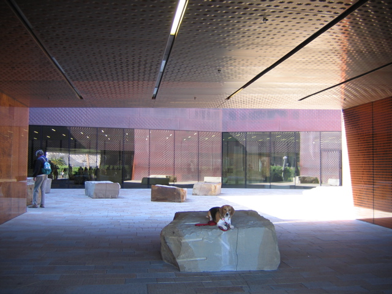

<--Previous Up Next-->

Faultline
It's not Huxley's fault. The crack in Andy Goldsworthy's "Drawn Stone" (renamed from "Faultline" after someone got cold feet about admitting that this is earthquake country) runs through the stones of the pavement and each boulder.
After I took this picture and Huxley hopped down from his pedestal, a group of well-dressed Japanese tourists who had been waiting behind us applauded and complimented him on his good behavior.